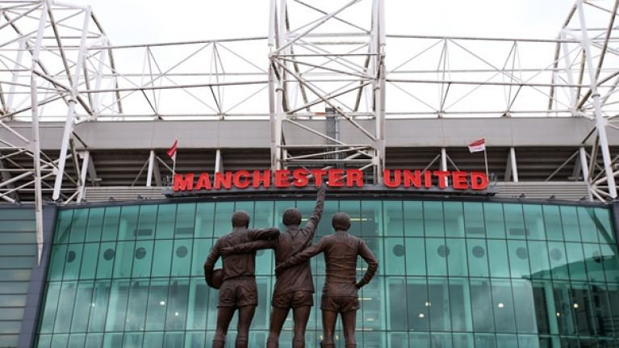
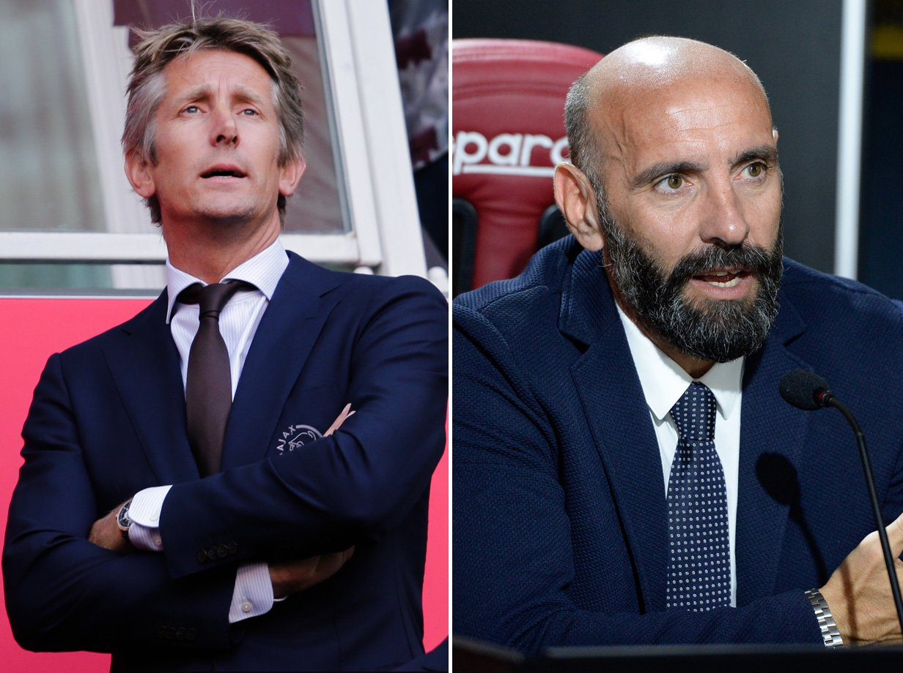

After a disappointing transfer window in which United failed to sign many of their transfer targets leaving manager Jose Mourinho frustrated, the club is now set to appoint their first-ever director of football.
Following the new trend set by most top clubs, the Daily Mail reports that United have begun sounding out candidates as they start an extensive amount of assessment to fill that role.
The DoF is someone who has responsibility for continuity of playing style and recruitment.
Such people know football and cannot only evaluate a prospective signing based on ability but also assess whether or not he can fit into a system.
Former United goalkeeper Edwin Van der Sar as reported by Independent along with Juventus transfer chief Fabio Paratici and Roma’s Ramón Rodríguez Verdejo also commonly known as Monchi have all been sounded out as options.
The most favorable option would be Van der Sar who won seven trophies during his six seasons at the club and for the stellar work he has done as CEO of his boyhood club Ajax.
A director of football will work with United’s recruitment team alongside executive vice-chairman Ed Woodward and Mourinho to ensure a long-term plan is in place so United can land long-term targets.
Reports also claims that Mourinho has previously been averse to the idea of working under a director of football but accepts that the typical job of a manager is changing in football.
Personally, I think having a skilled, respected operator, who works and cares for the club, could be a significant asset.
Manchester United considering appointing the first-ever director of football
By Vinesh Kumar
Updated 1:00 AM on 09 2018

©Getty Images

Edwin Var der Sar and Ramón Rodríguez

Sun Aug 19 - Falmer Stadium
Man Utd 16:00
16:00 Brighton
Brighton
 Bournemouth
Bournemouth C Palace
C Palace Man City
Man City Watford
Watford